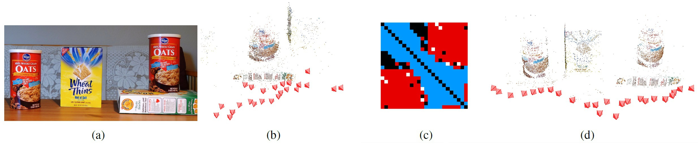

Back to publications page |
||||||||||||||||||||||||||||||||||||||||||||||||||||||||||||||||||||||||||||||||||||||||||||||||||
CVPR 2011 |
||||||||||||||||||||||||||||||||||||||||||||||||||||||||||||||||||||||||||||||||||||||||||||||||||
Structure from motion for scenes with large duplicate structures
|
Richard Roberts |
Sudipta N. Sinha |
Richard Szeliski |
Drew Steedly |
|  |
|
(a)
Duplicate structures present in the scene.
(b)
A standard structure from motion (Sfm) pipeline folds both instances into one in reconstruction.
(c)
Our method infers the erroneous inter-instance matches (shown in red in the match graph adjacency matrix) and discards them.
(d)
This produces an accurate reconstruction.
|
| Abstract Most existing structure from motion (SFM) approaches for unordered images cannot handle multiple instances of the same structure in the scene. When image pairs containing different instances are matched based on visual similarity, the pairwise geometric relations as well as the correspondences inferred from such pairs are erroneous, which can lead to catastrophic failures in the reconstruction. In this paper, we investigate the geometric ambiguities caused by the presence of repeated or duplicate structures and show that to disambiguate between multiple hypotheses requires more than pure geometric reasoning. We couple an expectation maximization (EM)-based algorithm that estimates camera poses and identifies the false match-pairs with an efficient sampling method to discover plausible data association hypotheses. The sampling method is informed by geometric and image-based cues. Our algorithm usually recovers the correct data association, even in the presence of large numbers of false pairwise matches. Datasets The image sequences are now available for download. group1.zip (bldg, street) group2.zip (books, cereal, cup) group3.zip (desk, oats)
@inproceedings {ROBERTS-CVPR11,
key = "Roberts",
author = "Richard Roberts and Sudipta N. Sinha and
Richard Szeliski and Drew Steedly",
title = "Structure from motion for scenes with large
duplicate structures ",
booktitle = "IEEE Computer Society Conference on Computer
Vision and Pattern Recognition (CVPR 2011)",
location = "Fort Collins, CO",
month = "June",
year = "2011",
pubid = "147401",
keywords = "structure from motion, duplicate structures",
bibdate = "Wed Apr 6 17:34:27 2011"
}
|
|
|||||||||||||||||||||||||||||||||||||||||||||||||||||||||||||||||||||||||||||||||||||||||||||||||
Back to publications page |
||||||||||||||||||||||||||||||||||||||||||||||||||||||||||||||||||||||||||||||||||||||||||||||||||